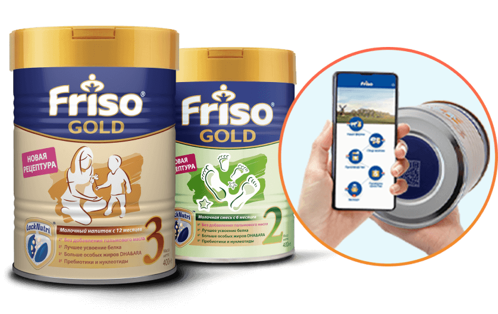
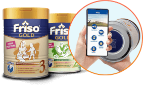

Узнайте, как производятся детские смеси Friso для вашего ребенка
Когда дело касается питания наших детей, мы хотим знать
абсолютно все о происхождении сырья для выбранного
нами продукта и особенностях его производства.
Поэтому мы создали инновационный способ, позволяющий проследить
путь детской смеси Friso от молочной фермы до готового продукта.
Отсканируйте QR-код на дне баночки Friso и посмотрите весь цикл производства
и тщательных проверок качества каждой банки, которую вы покупаете
для вашего малыша.
Вы можете узнать о расположении наших ферм в Нидерландах,
об особой технологии производства LockNutri ®, составе смеси FRISO
и точную дату проверки ее качества и экспорта в Россию.
Отсканируйте QR-код прямо сейчас и узнайте о производстве
детской смеси FRISO для вашего малыша
Проследи
весь путь Friso
от молочной фермы
до готового продукта.
весь путь Friso
от молочной фермы
до готового продукта.
Инновация от Friso
Узнай путь Friso от молочной фермы до готового продукта


Перед применением необходимо консультация специалиста.
Грудное молоко – лучшее питание для здорового роста и развития ребенка Friso Gold 2 для детей от 6 до 12 месяцев. Friso Gold 3 для детей от 12 месяцев.
Отсканируй QR-код
Грудное молоко – лучшее питание для здорового роста и развития ребенка Friso Gold 2 для детей от 6 до 12 месяцев. Friso Gold 3 для детей от 12 месяцев.
на дне банки Friso уже сегодня!